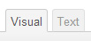
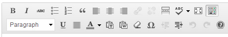
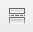
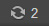
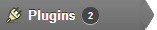

This is a general manual to help you explain the basics of WordPress. All information described here is based on a standard (US version) WordPress installation.
I've tried to cover all things which could occur when you're writing/editing a post/content/media. I've tried to describe the most common actions step-by-step, so if you follow these guidelines, you should be good.
WordPress started in 2003 as a simple tool to create a simple blog. Since then it has grown to be the largest self-hosted blogging tool in the world, used on millions of sites and seen by tens of millions of people every day.
WordPress is an Open Source project; which means its program code is freely accessable, unlike for example Microsoft Windows. Since this code is accessable to all, everyone can make changes to it, create add-ons (plugins and widgets), create their own designs and more.
This makes it an ever growing product, which constantly evolves and improves. All thanks to thousands of developers who help to improve it.
The WordPress Admin Bar is always visible on the top of your screen, when you are logged in. You can disable this option in the settings of Your Profile (5).
Note: some templates/designs prohibit the displaying of this admin bar on the front side of the website.
Right now is the 'actual status' of your (published) posts, pages, categories, tags and comments. Also it displays which template is in use, how many widgets are used and the installed version.
If search engines are 'discouraged' to index the site due to testing or private use, this will then be visible here as well.
If you might happen to use a plugin which is related to comments, this also might create some output (like how many spam comments have been blocked), which will also be shown here.
Screen Options is what it says it is. It has options for your (current) screen. If you click it, you can see several options to select/deselect. This gives you the option to get rid of stuff you don't need or don't want to see.
There are a lot of things on the dashboard, which you don't really need. Like Wordpress Blog, Other Wordpress News and Plugins and maybe Quickpress and Recent Drafts can also be added to that but yo ucan decide that for your self.
A lot of things in Wordpress have their own Screen Options. Posts and pages both have them, but both are different. Same goes for listing all posts or all categories.
Just play around with it and don't worry, it is set per user. So what you decide doesn't affect other users.
On this page you can set everything, concerning your user. You can set your Name, nickname, email, password, website a small biography and other options.
Not everything which can be entered will also be displayed. This depends on the template which is used.
If you're a bit stuck, you can always click the Help button. This will make a help menu appear on the top of your page, containing Help topics, related to the topic of which page you're viewing at that point.
So if you're on the dashboard, it gives some tips about the layout and content, but if you're on the plugins page, it gives you different Help topics.
Quickpress can be used if you want to post something really fast. To this day I haven't come across someone who actually uses it, so most people remove it from their dashboard.
This is where you can see all posts with status "draft". It's a list of posts which have been started and saved, but not yet published.
This is where you can see all latest comments to your site and whether you have to approve them or not (depending on the site's settings.)
This widget shows you whether sites have linked back to you. You can set a specific URL to search for it.
Writing content for a site can be devided in 2 types (95% of the time); posts and pages. What is the difference and when do you create a post and when a page ?
Posts are pieces of content, which can be best described as 'time-related content', for example a news item, an annoucement, a story, a video. Content which is posted on a certain date.
Pages on the other hand, can be best described as static content. Content which is always there, like an about page, a FAQ, a contact page, a page with general terms, anything where the post date does not matter.
WordPress uses 2 types of editors. Visual and Text. You can select either by clicking on the different tabs (if not closed of by admin).

Visual
The visual editor is a so called WYSIWYG (What You See Is What You Get). You can compare it to Word. You can see what you're editing (visually).
Text
This is called a text editor because you (can) write in html code there (and needed for embedding videos/other embeds).
IMPORTANT NOTE !!!
DON'T copy anything directly from Word documents into the Visual editor. Word (also) uses WYSIWYG and if you copy something from Word, Word implements all sorts of hidden styling tags, which can mess up the post in Wordpress.
If you want to copy text from Word, use the import Word function. This option can be found by clicking the most right button in the 'Edit bar'; the 'Show/Hide Kitchen Sink' button.
A second line of options appears.

You now see an button with a Word icon in it (5th button from left). Click it and a popup opens where you can paste your Word content.
If you need to strip any tags, copied from Word, select all the text and click the eraser.
Click here to see how a new empty post looks like (image opens in new tab).
That is the standard layout you see when you create a new post (minus the red numbers of course).
Some things you should keep in mind when writing a post:
Enter the content you want to write. There's no need to style your text. All style elements (like colors, sizes, distances etc.) for the entire site is registered in a central document called 'a stylesheet'.
The Read More button
Posts can be devided in an intro text and a complete post. You probably don't want to publish a complete post on a frontpage. You want to show the first 10 lines (or something similar) and if the visitors want to read more, they click "read more" to read the full article/post.
If you click the MORE button, it will automatically cuts off your post there and insert the words Read More and links it to the full post.

This is the read more button (in the visual editor). In the html editor the button says 'more'.
If you have completed writing the post, you can publish/schedule it.
Click here to see how a new empty page looks like (image opens in new tab).
As you can see it looks a bit different than a post. Some things are not there and there's a new 'box' (4).
Page Attributes
Here you can set where the page should be positioned. Should it become a subpage of some other page or is it a top-level page ? Should a certain template be used (note that this option is not always available) ? Those things can be set here.
All sorts of media can be uploaded to WordPress; images, pdf's, documents, almost anything goes.
You can add a gallery if you have more than one photo, for instance a review of something.
Editing is reopening an existing post/page to make changes (regardless of post/page status).
Note: If a post is published be extra careful since any change you make will be immediately visible.
When a post is published 2 things are set; the permalink, which is the address after www.site.com/ and the publication date.
If a post is published without a title, the permalink becomes the unique id of the post. For example www.site.com/2032/. That's why you always have to start with a title. If you failed to do this, no worries, it can be corrected. Click the edit button next to the permalink. Delete everything in it and click ok. Then save the post. Problem solved.
You can change the publication date. If you set it in the past, your post might not be visible anymore on the frontpage. If you set it in the future, it will be scheduled to be published on the set date/time.
Since WordPress (or its plugins/themes) is constantly upgraded/improved, you get update notifications once in a while. If updates are available, you can see this in your WordPress Admin Bar, like the image below.

If you click it, (and you have the correct permission) you're taken to a page where all updates are visible.
Please keep in mind, you most likely need the FTP details to upgrade anything (this goes for 95% of the times).
Here you can update WordPress (if an update is available) or you can re-install the latest version, if needed. Please remember, if you update WordPress the site will be offline for about 2 minutes (depending on how fast your internet connection is, because a new version has to be downloaded).
If any plugins have available updates, you can also see it by the number next to plugins (in the expanded menu). See image below.

Here you can update Plugins (if an update is available). Please keep in mind, if you update an active the site will be offline for about 2 minutes.
To prevent the site going offline entirely, go to the plugins page.
Filter the plugins where an update is available, select all plugins, deactivate them, select them all again and update them.
Now go back to the plugins page, filter all plugins which were recently active. Select them all and reactivate them.
Only if you use a theme which comes from the WordPress template directory, you might get occasional updates. The same goes for WordPress and plugins. If you update an active theme, the site will be briefly offline.
Deactiving a template (like with plugins) is not recommended due to template specific settings.
¹ not available to all users (depending on their user role)
This WordPress documentation © 2016 is not publicly licensed.
No parts of this documentation may be copied, reproduced or published without the authorisation of its creator.